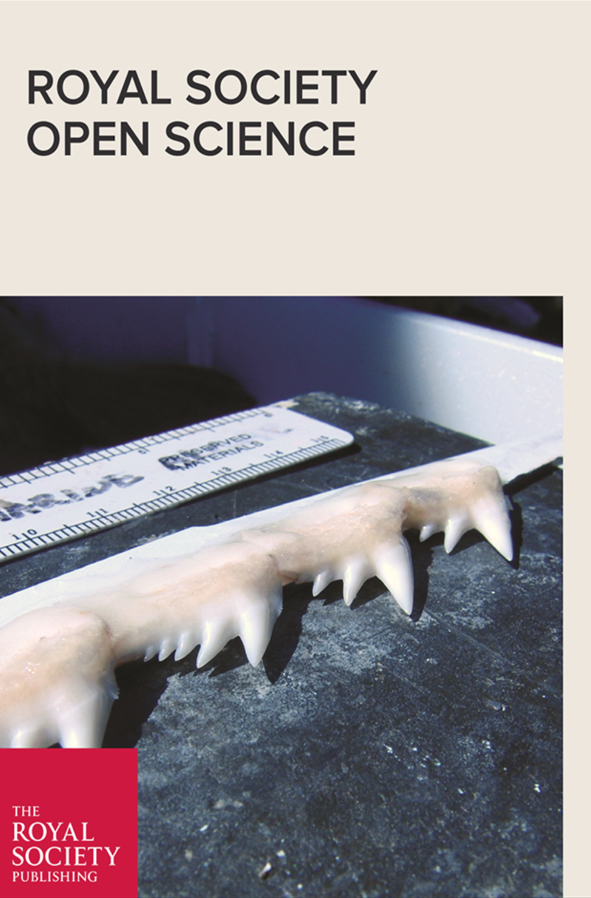

Publications
Price, S.A., S.T. Friedman, K.A. Corn, C.M. Martinez, O. Larouche, P.C. Wainwright. (in review) Building a body shape morphospace of teleostean fishes. Integrative and Comparative Biology.
Farina, S.C., M.L. Knope, K.A. Corn, A.P. Summers, W.E. Bemis. (accepted) Functional coupling in the evolution of suction feeding and gill ventilation of sculpins (Perciformes: Cottoidei). Integrative and Comparative Biology.
Corn, K.A., S.C. Farina, A.P. Summers, A.C. Gibb. 2018. Effects of organism and substrate size on burial mechanics of English sole, Parophrys vetulus. Journal of Experimental Biology, 221(18), doi: 10.1242/jeb.176131.
Corn, K.A., S.C. Farina, J. Brash, A.P. Summers. 2016. Modeling tooth-prey interactions in sharks - the importance of dynamic testing. Royal Society Open Science 3: 160141, doi: 10.1098/rsos.160141.